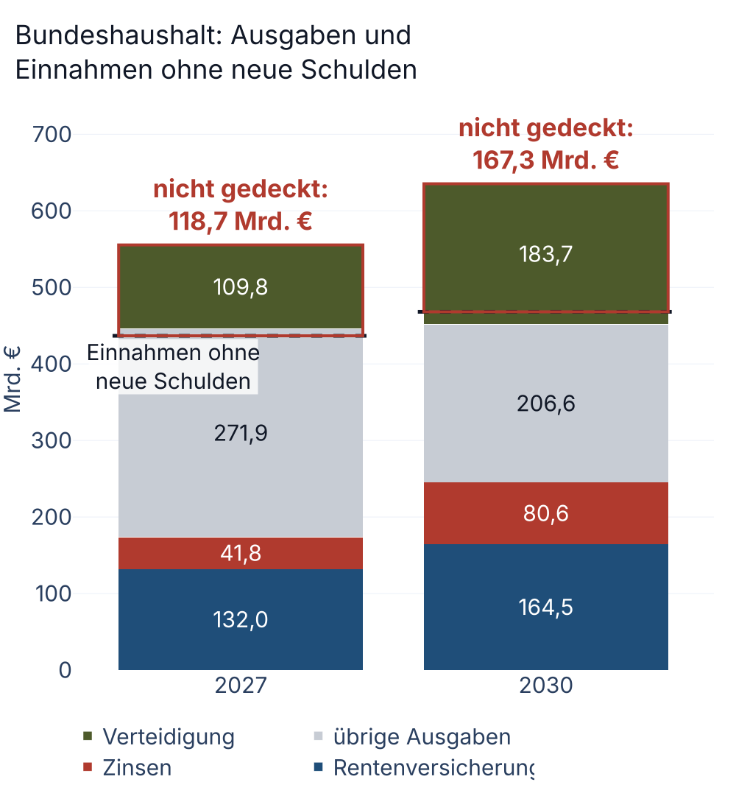
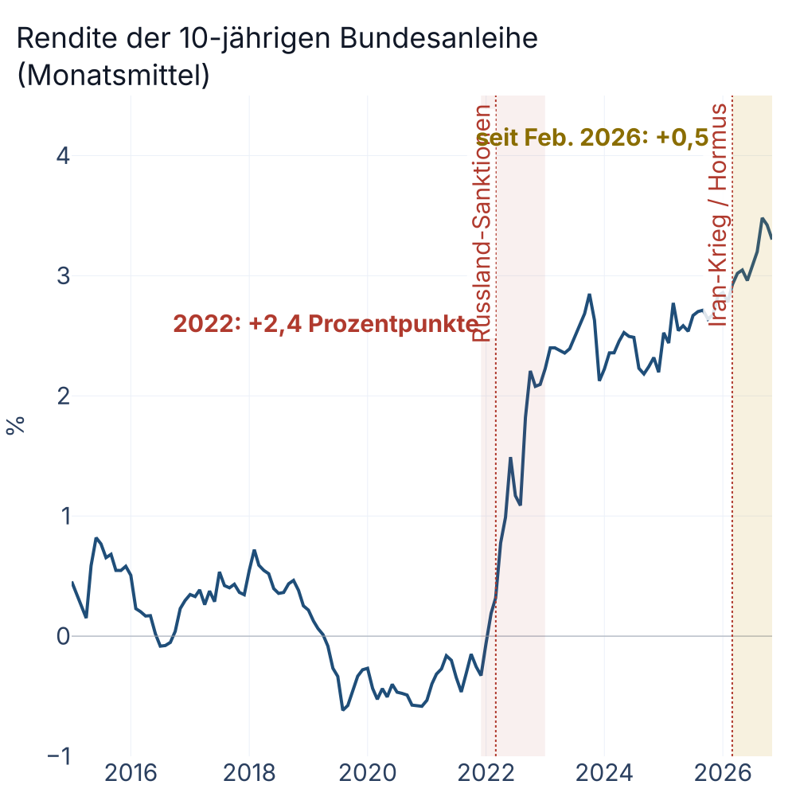
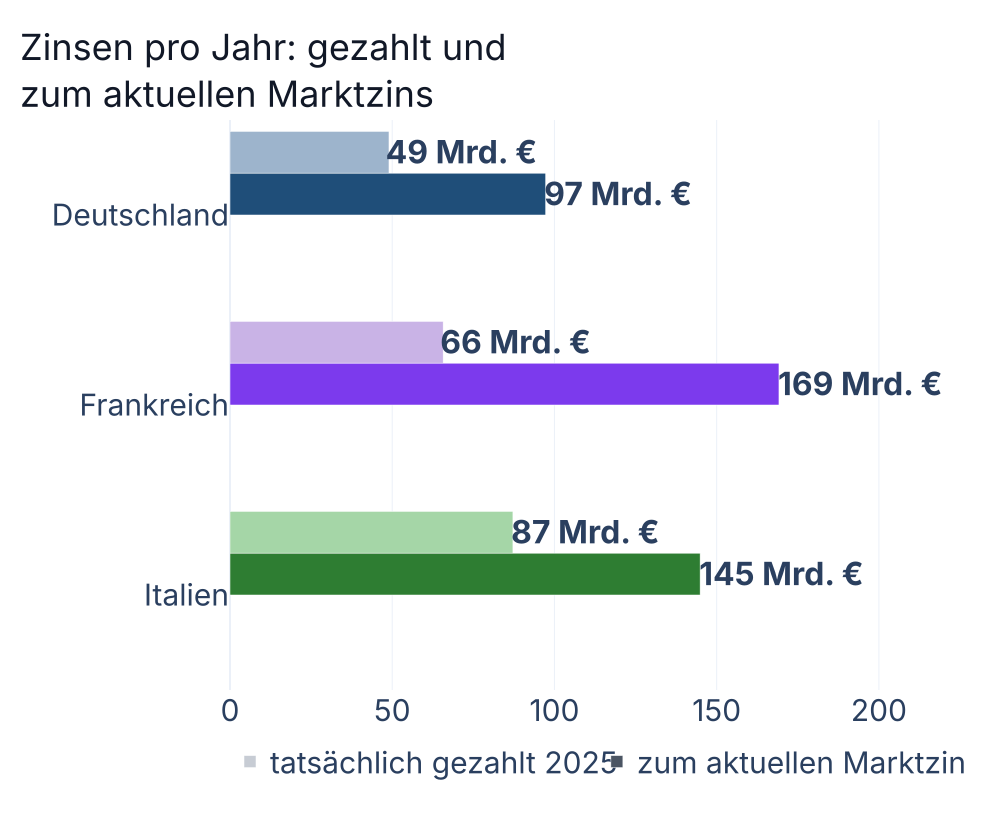

Mehr Ausgaben als Einnahmen

2030: 635,4 Mrd. € Ausgaben, aber nur 468,1 Mrd. € Einnahmen ohne neue Schulden – 167,3 Mrd. € nicht gedeckt, fast so viel wie der Verteidigungsetat (183,7 Mrd. €).
Die Zinsen verdoppeln sich bis 2030 fast. Zusammen mit der Rente binden sie 56 % der Steuereinnahmen des Bundes. Woher kommt der Anstieg?
Finanzplan des Bundes 2026–2030, Drs. 21/7301: Tab. 3, Tab. 8 (Epl. 14), Tab. 9, Rentenversicherungsleistungen.
Der große Sprung kam 2022

Die Rendite der 10-jährigen Bundesanleihe ist der Zins, zu dem sich der Bund neues Geld leiht.
2022: von −0,33 % auf 2,10 % = +2,4 Prozentpunkte
Seit dem Iran-Krieg: von 2,78 % auf 3,30 % = +0,5 Prozentpunkte
Monatsmittel der Tagesrendite der aktuellen 10-jährigen Bundesanleihe, Deutsche Bundesbank; Dez. 2021 → Dez. 2022 und Feb. 2026 → Nov. 2026.
Die Zinsen stiegen überall gleichzeitig

Schon vor den Russland-Sanktionen, Dez. 2021 → Feb. 2022: Deutschland +0,53 · Frankreich +0,63 · Italien +0,74 · USA +0,46 Prozentpunkte
Weltweit stieg die Inflation, die Notenbanken leiteten die Zinswende ein. Krieg und Energiepreisschock trieben die Renditen 2022 weiter nach oben.
Eurostat irt_lt_mcby_m (EU-Konvergenzrenditen), FRED IRLTLT01USM156N (USA).
Warum wir es erst jetzt spüren
Der Staat leiht sich über Anleihen mit 10, 20 oder 30 Jahren Laufzeit. Erst wenn alte, billige Anleihen auslaufen, muss er sie zum neuen, höheren Zins ersetzen – der Sprung von 2022 kommt so Jahr für Jahr im Haushalt an.
Tatsächlich gezahlte Zinsen des Staates21,8 → 49,0 Mrd. €2021 → 2025
Durchschnittszins auf alle Schulden0,87 % → 1,72 %2021 → 2025 – und weiter steigend
Zinsen im Bundeshaushalt (Plan)41,8 → 80,6 Mrd. €2027 → 2030
Würde der gesamte Schuldenstand von 2,97 Bio. € zum heutigen Zins der Bundesanleihe (3,30 %) neu verzinst: ≈ 98 Mrd. € pro Jahr – doppelt so viel wie 2025 gezahlt.
Das Problem holt uns ein – und belastet künftige Haushalte und Generationen.
Zinsausgaben, Schuldenstand: Eurostat gov_10a_main, gov_10dd_edpt1; Bund: Finanzplan 2026–2030, Tab. 9. Modell: Schuldenstand Nov. 2026 (fortgeschrieben) × Rendite Nov. 2026.
Frankreich und Italien trifft es noch härter

| Schulden | Rendite | Zinslast | 20–59 J. | je Person | |
|---|---|---|---|---|---|
| Deutschland | 2,85 Bio. € | 3,42 % | 97 Mrd. € | 42,5 Mio. | 2.290 € |
| Frankreich | 3,46 Bio. € | 4,89 % | 169 Mrd. € | 33,8 Mio. | 5.000 € |
| Italien | 3,10 Bio. € | 4,68 % | 145 Mrd. € | 30,0 Mio. | 4.840 € |
Für jeden Menschen zwischen 20 und 59 Jahren entspricht das pro Jahr: Frankreich ≈ 5.000 €, Italien ≈ 4.840 €, Deutschland ≈ 2.290 €.
Schulden Ende 2025: Eurostat gov_10dd_edpt1; Rendite Okt. 2026: irt_lt_mcby_m; Zinsen 2025: gov_10a_main; 20- bis 59-Jährige am 1.1.2025: demo_pjangroup. Modell, keine Prognose.